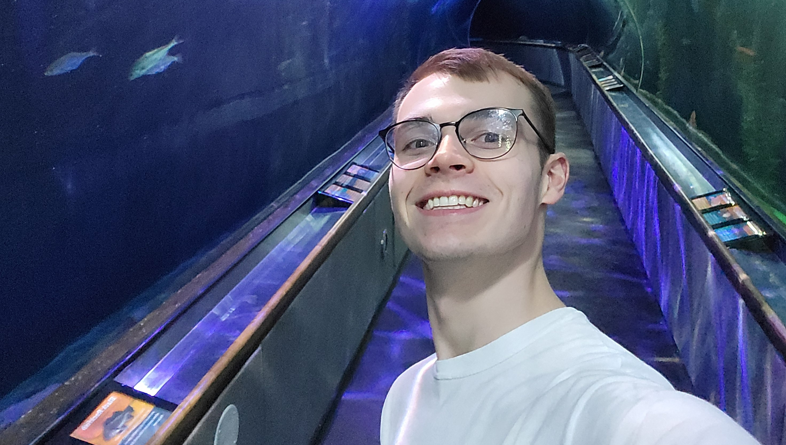

Benjamin
Westerhof

Hello there. My name is Ben Westerhof and I am an aspiring graphic designer currently based in Mount Pleasant, Michigan!
Some of my interests include apples, white shirts, and overthinking my life choices.
Just kidding of course. I have found a new love during my design journey in Brand and Identity design, so if you were curious on my this site is filled with these types of projects, then there is your answer. I feel very confident in this area as the fulfillment and pride that comes when finishing one of these projects is insurmountable.